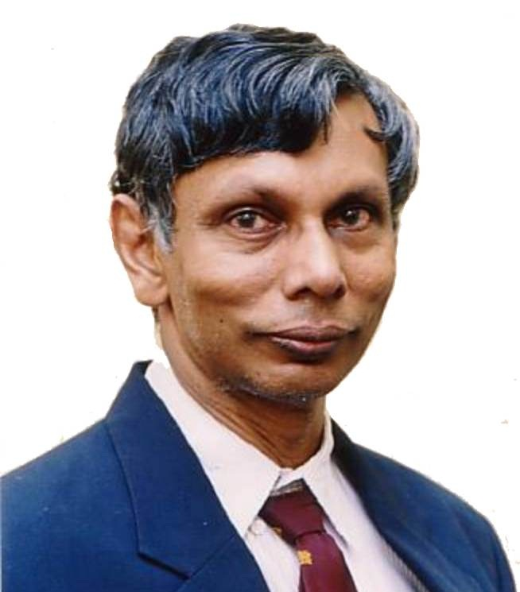
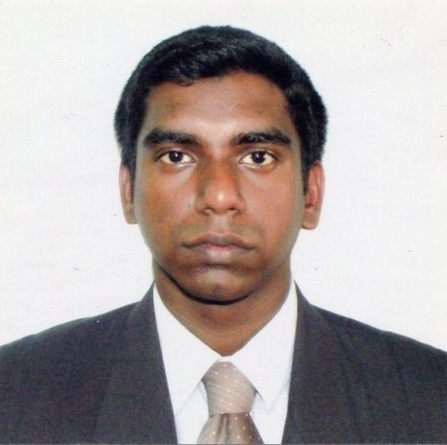

|  |
Honorary Chair Prof. J. Rohan Lucas University of Moratuwa, Sri Lanka lucas@elect.mrt.ac.lk |
|
General Chair Prof. W. P. S. Dias University of Moratuwa, Sri Lanka priyan@civil.mrt.ac.lk |
|
| Program Chair
Prof. S. Rohan Munasinghe University of Moratuwa, Sri Lanka rohan@ent.mrt.ac.lk |
|
|  |
Program Co-Chair Dr. H. M. N. Dilum Bandara University of Moratuwa, Sri Lanka Dilum.Bandara@uom.lk |
|
Registration/Financial Chair Dr. R.A.R.C. Gopura University of Moratuwa, Sri Lanka gopura@mech.mrt.ac.lk | |
|
Publications Chair Dr. A. G. B. P. Jayasekara University of Moratuwa, Sri Lanka buddhika@elect.mrt.ac.lk |
|
|
Tutorials and Workshops Chair Dr. Udeni Nawagamuwa University of Moratuwa, Sri Lanka udeni@civil.mrt.ac.lk | |
|
Exhibition Chair Dr. Lesley Ekanayaka University of Moratuwa, Sri Lanka lesly@civil.mrt.ac.lk |
|
|
Local Organizing Chair Dr. Nalin de Silva University of Moratuwa, Sri Lanka nalinds@civil.mrt.ac.lk |
| Field Chairs | ||
| Chemical and Process Engineering | Chair: | Prof. Britt Margrethe Halvorsen, Telemark University College, Norway |
| Co-Chair: | Dr. Mahinsasa Narayana, University of Moratuwa, Sri Lanka) | |
| Power Systems, Electrical Machines and High Voltage Engineering | Chair: | Dr. Dharshana Muthumuni, Manitoba HVDC Research Centre, Canada |
| Co-Chair: | Prof. Nalin Wickramarachchi, University of Moratuwa, Sri Lanka) | |
| Energy and Mechanical Engineering Systems | Chair: | Prof. Kazuo Kiguchi, Kyushu University, Japan |
| Co-Chair: | Dr. Ruwan Gopura, University of Moratuwa, Sri Lanka | |
| Civil and Environmental Engineering | Chair: | Prof. S. A. S. Kulathilaka (University of Moratuwa, Sri Lanka) |
| Co-Chair: | Dr. Lalith Rajapakse (University of Moratuwa, Sri Lanka) | |
| Energy and Mechanical Engineering Systems | Chair: | Prof. Kazuo Kiguchi, Kyushu University, Japan |
| Co-Chair: | Dr. Ruwan Gopura, University of Moratuwa, Sri Lanka | |
| Telecommunication Systems | Chair: | Prof. Nandana Rajadewa, University of Oulu, Finland |
| Co-Chair: | Dr. Ruwan Udayanga, University of Moratuwa, Sri Lanka | |
| Civil and Environmental Engineering | Chair: | Prof. Junichi Koseki University of Tokyo, Japan |
| Co-Chair: | Dr. Nalin De Silva, University of Moratuwa, Sri Lanka | |
| Robotics and Control | Chair: | Prof. Zhang Tao, Tsinghua University, China |
| Prof. Satoru Goto, Saga University, Japan | ||
| Dr. Thrishantha Nanayakkara, King's College, London UK | ||
| Co-Chair: | Dr. Harsha Abeykoon (University of Moratuwa, Sri Lanka) | |
| Transport, Logistics and Technology Management | Chair: | Prof. Amal Kumarage (University of Moratuwa, Sri Lanka) |
| Co-Chair: | Dr. Indika Sigera (University of Moratuwa, Sri Lanka ) | |
| Big Data and Software Engineering–I | Chair | Prof. Gihan Dias (University of Moratuwa, Sri Lanka) |
| Prof. Sanath Jayasena | ||
| Co-Chair: | Dr. Dilum Bandara (University of Moratuwa, Sri Lanka) | |
| Textile and Apparel | Chair: | Dr. Gamini Lanarolle, University of Moratuwa, Sri Lanka |
| Co-Chair: | Dr. Sanath Jayawardena, University of Moratuwa, Sri Lanka | |
| Machine vision and Image Processing | Chair: | Prof. David Grayden, The University of Melbourne, Australia |
| Co-Chair: | Dr. Ranga Rodrigo (University of Moratuwa, Sri Lanka) | |
| Materials Science and Engineering | Chair: | Prof. Nanda Munasinghe, University of Moratuwa, Sri Lanka |
| Co-Chair: | Mr. Bandu Samarasekara, University of Moratuwa, Sri Lanka |
| Prof. Duminda Nishantha, Asia Pacific University, Japan |
| Dr. Narishma k. Shashidhar, Sam Houston State University, USA |
| Dr. Hiranya Suriyarachchi, University of Manitoba, Canada |
| Emeritus Prof. Nimal de Silva, University of Moratuwa, Sri Lanka |
| Prof. Priyan Dias, University of Moratuwa, Sri Lanka |
| Prof. Rohan Munasinghe, University of Moratuwa, Sri Lanka |
| Dr. Singo Ashamota, Saitama University, Japan |
| Prof. Nishantha Ekneligoda, Oklahoma State University, USA |
| Mr. Lalin kothalawala, University of Manitoba, Canada |
| Prof. W.A. Wimalaweera, Open University, Sri Lanka |
| Prof. Amal Kumarage, University of Moratuwa, Sri Lanka |
| Dr. Kamal Laksiri, Ceylon Electricity Board, Sri Lanka |
| Dr. C.D. Tilakaratne, University of Peradeniya, Sri Lanka |
| DR. P. G. Rathnasiri, University of Moratuwa, Sri Lanka |
| Mrs. Dilini Kulawansa, University of Moratuwa, Sri Lanka |
| Prof. S. Jayasena, University of Moratuwa, Sri Lanka |
| Prof. N. K. Wickramarachchi, University of Moratuwa, Sri Lanka |
| Prof. S.W.S.B. Dasanayake, University of Moratuwa, Sri Lanka |
| Prof. T.S.G. Peiris, University of Moratuwa, Sri Lanka |
| Dr. S. Fernando, University of Moratuwa, Sri Lanka |
| Dr. Dilruk Yahathugoda, Senior Innovation Leader, MAS holdings, Sri Lanka |
| Dr. T. Sivakumar, University of Moratuwa, Sri Lanka |
| Dr. S. Walpalage, University of Moratuwa, Sri Lanka |
| Prof. H. Y. R. Perera, University of Moratuwa, Sri Lanka |
| Dr. S. U. Amarasinghe, University of Moratuwa, Sri Lanka |
| Prof. K. Perera, University of Moratuwa, Sri Lanka |
| Dr. G. Ranatunga, University of Moratuwa, Sri Lanka |
| Prof. Britt Margrethe Halvorsen, Telemark University College, Norway |
| Prof. Kazuo Kiguchi, Kyushu University, Japan |
| Dr. Damminda Alahakoon, La Trobe University, Australia |
| Dr. Kazuo Kiguchi, Kyushu University, Japan |
| Mr. Sachithra Hemachandra, MIT, USA |
| Dr. Stephen Cahoon, Australian Maritime College, Australia |
| Dr. Nihal Yatawara, Curtin University, Australia |
| Mr. Chulaka Gunasekara, Syracuse University, Syracuse |
| Prof. Keerthi Walgama, University Of Peradeniya, Sri Lanka |
| Prof. Sisil Kumarawadu, University of Moratuwa, Sri Lanka |
| Dr. Thilak Siyabalapitiya, Resource Management Associates (pvt) Ltd, Sri Lanka |
| Dr. Lynne Hammond, London College of Fashion, UK |
| Mr. Namal Thibbatuwawa, Queensland University of Technology, Australia |
| Mr. S. Uggalla, Peak Gold mine, Australia |
| Prof. P. Wijekoon, University of Peradeniya, Sri Lanka |
| Prof. Vathsala Wickramasinghe, University of Moratuwa, Sri Lanka |
| Dr. Prabath J. Binduhewa, University of Peradeniya, Sri Lanka |
| Dr. Ranga Rodrigo, University of Moratuwa, Sri Lanka |
| Dr. G. L. D. Wickramasinghe, University of Moratuwa, Sri Lanka |
| Dr. U. P. Navagamuwa, University of Moratuwa, Sri Lanka |
| Mr. S. Weerawarnakula, University of Moratuwa, Sri Lanka |
| Dr. Anjula De Silva, University of Moratuwa, Sri Lanka |
| Dr. S. U. Adikary, University of Moratuwa, Sri Lanka |
| Prof. R. Attalage, University of Moratuwa, Sri Lanka |
| Ms. N. Tissera, SLINTEC, Sri Lanka |
| Dr. Jayathu Samarawickrama, University of Moratuwa, Sri Lanka |
| Dr. M. F. M. Firdhouse, University of Moratuwa, Sri Lanka |
| Prof. P. G. R. Dharmarathne, University of Moratuwa, Sri Lanka |
| Dr. S. Thayaparan, University of Moratuwa, Sri Lanka |
| Dr. N. M. V. K. Liyanage, University of Moratuwa, Sri Lanka |
| Prof. George Mann, Memorial University of Newfoundland, Canada |
| Dr. Indika Sigera, University of Moratuwa, Sri Lanka |
| Prof. Masatoshi Nakamura, Emeritus Professor, Saga University, Japan |
| Prof. Saman Halgamuge, University of Melbourne, Australia |
| Dr. Thrishantha Nanayakkara, King's College London, UK |
| Dr. Tao Zhang, Tsinghua University, China |